Plant Grimoire
Language of Flowers
The idea that a small posy could carry a hidden message, especially between lovers, first took root in the East, though the older notion of flowers as divine messengers stretches back even further. One early example is the legend of the Buddha's teachings drifting down from the sky as blossoms. This practice of assigning particular meanings to flowers is known as floriography, and those meanings do not always line up with a flower's more widely accepted symbolism.
Interest in the custom spread through Europe, and from there to America, after Lady Mary Wortley Montagu traveled to Turkey in 1718. In letters home she described a system in which flowers and everyday objects were used to communicate. A related tradition called hanakotoba also existed in Japan, where its pull was strong enough that even the famed Samurai embraced it, with families often adopting specific flowers as their crests much like heraldic coats of arms.
Flowers were far from the only objects used to send coded messages. Fruits and other foods, gemstones, plain pebbles, and even lumps of coal could all carry meaning. A Turkish love letter, then, was often less a written note than a parcel packed with a curious mix of items.
Still, it was flowers that most captured the imagination. By the nineteenth century the craze for cataloguing nearly everything had taken hold, and lists pairing flowers with their meanings began to circulate alongside several books exploring the idea. A standard dictionary of flower symbolism, published in England in 1879, became widely used on both sides of the Atlantic. The timing matched the Victorian passion for flowers perfectly, as newly explored lands yielded rare exotics raised in hothouses as status symbols. Fresh blooms were worn in lapels and hair like jewelry, and floral images decorated stationery, fabrics, and china.
Over time the language grew more elaborate. Certain arrangements carried meanings greater than the sum of their parts, and even the way a flower was offered mattered. Victorians took up the fashionable pastime of making tussie-mussies, small posies wrapped in lace and ribbon.
The lists of meanings were never uniform, and that ambiguity continues today, even as some associations have become universal. The red rose, for example, is recognized everywhere as a symbol of love. Meanings also keep shifting with use. The daffodil once stood for unrequited love yet now signals hope, having been adopted as an emblem by certain charities.
A
- Acacia: Secret love, considered bad luck if given to a woman
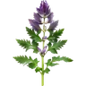
Acanthus Leaves: Admiration for the arts- Achillea / Yarrow: Healing and comfort
 Almond Blossom: Hope, haste, watchfulness, virginity, and a happy marriage
Almond Blossom: Hope, haste, watchfulness, virginity, and a happy marriage- Amaranth: Faith, immortality, unfading love
- Amaryllis: You are sought after, poetry
 Anemone: Brevity, "go away!"
Anemone: Brevity, "go away!"- Apple Blossom: Preference, better things to come, good fortune
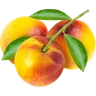
Apricot Blossom: Timid love Arbutus: Thee only do I love
Arbutus: Thee only do I love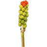
Arum: Ardor Asparagus Fern: Fascination
Asparagus Fern: Fascination Asphodel: Languor, regret, death
Asphodel: Languor, regret, death- Aster: Daintiness, a talisman of love
- Aster (China): Fidelity, variety, I will think of thee
 Azalea: Take care, temperance, passion, Chinese symbol of womanhood
Azalea: Take care, temperance, passion, Chinese symbol of womanhood
B
- Baby's Breath: Innocence, purity of heart
- Bachelor's Button / Cornflower: Single blessedness, celibacy
- Balm / Lemon Balm: Sympathy
 Balsam: Ardent love
Balsam: Ardent love Beech: Prosperity
Beech: Prosperity Begonia: Beware, a fanciful nature
Begonia: Beware, a fanciful nature Belladonna: Fatal gift to a man
Belladonna: Fatal gift to a man- Bells of Ireland: Good luck
- Birch: Grace, meekness
- Bittersweet Nightshade: Truth
 Briony / Lady's Seal: Be my support
Briony / Lady's Seal: Be my support Bluebell / Bell Flower: Humility, constancy, gratitude
Bluebell / Bell Flower: Humility, constancy, gratitude- Broom: Humility, neatness
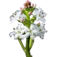
Buck Bean: Calm repose Buttercup: Childishness, riches
Buttercup: Childishness, riches
C
- Cactus: Endurance, my heart burns with love
 Calla Lily: Magnificent beauty
Calla Lily: Magnificent beauty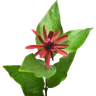
Calycanthus / Carolina Allspice / Sweet Shrub: Benevolence Camellia: Admiration, perfection, good-luck gift for a man, gratitude
Camellia: Admiration, perfection, good-luck gift for a man, gratitude- Camellia (Pink): Longing
- Camellia (Red): You're a flame in my heart
- Camellia (White): You're adorable
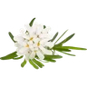
Candytuft: Indifference Canterbury Bells / Bell Flower: Gratitude
Canterbury Bells / Bell Flower: Gratitude Cardinal Flower / Scarlet Lobelia: Distinction
Cardinal Flower / Scarlet Lobelia: Distinction- Carnation (General): Fascination, admiration
- Carnation (Pink): I'll never forget you, women's love
- Carnation (Red): My heart aches for you, admiration
- Carnation (Purple): Capriciousness
- Carnation (Solid Color): Yes
- Carnation (Striped): No, wish I could be with you
- Carnation (White): Sweet and lovely, innocence, pure love, woman's good-luck gift
- Carnation (Yellow): You have disappointed me, rejection
 Catchfly (Red): Youthful love, I fall victim
Catchfly (Red): Youthful love, I fall victim Cat Tail: Peace, prosperity
Cat Tail: Peace, prosperity Cattleya: Mature charms
Cattleya: Mature charms Cedar: I live but for thee, think of me
Cedar: I live but for thee, think of me Celandine / Pilewort / Figwort: Future joy
Celandine / Pilewort / Figwort: Future joy- Chamomile /
 German Chamomile / Golden Marguerite / Anthemis: Energy in action
German Chamomile / Golden Marguerite / Anthemis: Energy in action  Cherry Blossom (Double): False hopes
Cherry Blossom (Double): False hopes- Cherry Blossom (Single): Education
- Chickweed: I cling to thee
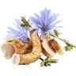
Chicory: Frugality- Christmas Rose / Hellebore / Helleborus: Relieve my anxiety
- Chrysanthemum (General): You're a wonderful friend, cheerfulness and abundance
- Chrysanthemum (Red): I love you
- Chrysanthemum (White): Truth
- Chrysanthemum (Yellow): Slighted love
- Cinquefoil: Beloved child
 Clematis: Artifice (ingenuity)
Clematis: Artifice (ingenuity)- Clove: I love you secretly
- Clover: Fertility
- Clover (Four-leaf): Be mine
- Clover (Red): Industry
- Clover (White): Think of me
 Colchicum (Meadow Saffron): My best days fled
Colchicum (Meadow Saffron): My best days fled Columbine: Folly
Columbine: Folly- Columbine (Purple): Resolved to win
- Columbine (Red): Anxious
- Compass Plant: Faith
- Convolvulus Minor / Morning Glory: Uncertainty, tender affection
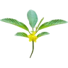
Corchorus: Impatience of happiness Coreopsis: Always cheerful
Coreopsis: Always cheerful- Cornflower: Delicacy, refinement
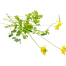
Coronilla / Crown Vetch: Success to you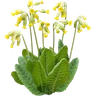
Cowslip: Rusticity, winning grace, healing, youth, pensiveness- Coxcomb: Foppery, unfading love
- Crocus / Saffron: Cheerfulness, abuse not, gladness
 Cypress: Mourning
Cypress: Mourning
D
 Daffodil: Regard, unrequited love, you're the only one
Daffodil: Regard, unrequited love, you're the only one- Daffodil (Yellow): Chivalry
 Dahlia: Dignity and elegance, forever thine, instability
Dahlia: Dignity and elegance, forever thine, instability Daisy: Innocence, loyal love, purity, beauty, respect
Daisy: Innocence, loyal love, purity, beauty, respect- Daisy (Red): Beauty unknown to possessor
- Daisy (Ox-eye): Patience
- Dandelion: Faithfulness, happiness, love's oracle
 Daphne Cneorum / Rose Daphne: I desire to please
Daphne Cneorum / Rose Daphne: I desire to please- Daphne Odora / Winter Daphne: I would not have you otherwise
- Dead Leaves: Sadness
- Delphinium / Larkspur: Big-hearted, fun
 Dill: Lust
Dill: Lust Diosma: Your simple elegance charms me
Diosma: Your simple elegance charms me Dog Rose: Pleasure and pain
Dog Rose: Pleasure and pain Dogwood (Flowering): Am I indifferent to you?
Dogwood (Flowering): Am I indifferent to you?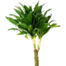
Dracaena / Dragon's Blood / Dragon Lily: Inner power Dragon Root / Green Dragon: Ardor
Dragon Root / Green Dragon: Ardor
E
 Edelweiss / Alpine Cudweed: Daring, courage, noble purity
Edelweiss / Alpine Cudweed: Daring, courage, noble purity- Eglantine /
 Briar / Sweet-Briar / Rosa Eglantaria: Poetry, I wound to heal
Briar / Sweet-Briar / Rosa Eglantaria: Poetry, I wound to heal  Elder Flower: Zeal
Elder Flower: Zeal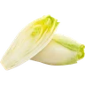
Endive: Frugality- Epigaea Repens / Mayflower / Trailing Arbutus: Budding
 Eremurus: Endurance
Eremurus: Endurance Eupatorium / Hardy Ageratum: Delay
Eupatorium / Hardy Ageratum: Delay Euphorbia: Persistence
Euphorbia: Persistence- Everlasting / Helichrysum: Never-ceasing memory
F
 Fern: Magick, fascination, confidence, shelter
Fern: Magick, fascination, confidence, shelter- Fern (Maidenhair): Secret bond of love, discretion
- Fern (Royal): Reverie
- Filbert / Hazel: Reconciliation
- Fir / Silver Fir: Time
 Flax: Domestic symbol
Flax: Domestic symbol Flora's Bell: Without pretension
Flora's Bell: Without pretension Flowering Reed: Confide in heaven
Flowering Reed: Confide in heaven Forget-Me-Not: True love, memories, remembrance
Forget-Me-Not: True love, memories, remembrance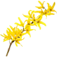
Forsythia: Anticipation Foxglove / Fairy Thimbles / Dead Men's Bells: Stateliness, youth
Foxglove / Fairy Thimbles / Dead Men's Bells: Stateliness, youth- Foxtail Grass: Sporting
- Fraxinella / Cultivated Dittany / Gas Plant: Fire
- Freesia: Innocence, trust
- Fuchsia (Scarlet): Confiding love, taste
 Furze: Love for all occasions
Furze: Love for all occasions
G
 Gardenia: You're lovely, secret love, purity, refinement
Gardenia: You're lovely, secret love, purity, refinement Garlic: Courage, strength, get well, ward off evil and illness
Garlic: Courage, strength, get well, ward off evil and illness Gentian (Fringed): Intrinsic worth, I look to heaven, fall
Gentian (Fringed): Intrinsic worth, I look to heaven, fall- Gentian (Closed): Sweet be thy dreams
- Geranium: True friend, stupidity, folly
- Geranium (Apple): Present preference
- Geranium (Ivy): Your hand for next dance
- Geranium (Lemon): Unexpected meeting
- Geranium (Nutmeg): I expect a meeting
- Geranium (Oak-leaved): True friendship, lady, deign to smile
- Geranium (Penciled): Ingenuity
- Geranium (Rose): Preference
- Geranium (Scarlet): Consolation, melancholy
- Geranium (Silver-leaf): Recall
- Gerbera: Innocence
- Ginger: Strength
 Gladiola: Generosity, I'm sincere, flower of the gladiators
Gladiola: Generosity, I'm sincere, flower of the gladiators- Globe Amaranth: Unfading love
- Gloxinia: Love at first sight
 Goldenrod: Be cautious, encouragement
Goldenrod: Be cautious, encouragement Gooseberry: Anticipation
Gooseberry: Anticipation- Goosefoot: Goodness
- Gorse / Furze: Endearing affection
- Grass: Submission, usefulness, homosexual love
- Guelder Rose / Snowball: Winter
H
- Harebell / Campanula: Humility, grief
- Hawthorn: Contentment
- Heartsease / Pansy / Johnny Jump Up: You occupy my thoughts
- Heather (Lavender): Admiration, solitude
- Heather (White): Protection, wishes will come true
- Heliotrope: Devotion
- Henbane: For males to attract love from females
- Hepatica / Liverwort: Confidence
- Hibiscus: Consumed by love, delicate beauty
- Holly: Defense, domestic happiness, good wishes
- Hollyhock: Fruitfulness
- Hollyhock (White): Female ambition
- Honesty / Lunaria / Dollar Plant / Money Plant: Sincerity
- Honeyflower: Sweet, secret love, generous affection, sweetness of disposition
- Honeysuckle: The bond of love
- Honeysuckle (Coral): I love you
- Houstonia / Bluet / Quaker Ladies: Content
- Hoya / Wax Plant: Sculpture
- Huckleberry: Faith, simple pleasures
- Hyacinth (General): Games and sports, rashness, dedicated to Apollo
- Hyacinth (Blue): Constancy
- Hyacinth (Purple): I am sorry, forgive me, sorrow
- Hyacinth (Red or Pink): Play
- Hyacinth (White): Loveliness, I'll pray for you
- Hyacinth (Yellow): Jealousy
- Hydrangea: Thank you for understanding, frigidity, heartlessness
I
- Indian Cress / Nasturtium: Resignation
- Ipomoea / Morning Glory: I attach myself to you
- Ivy: Wedded love, fidelity, friendship, affection
- Ivy (Sprig of White Tendrils): Anxious to please, affection
J
- Japonica: Sincerity, symbol of love
- Jasmine: Admirability
- Jasmine (Indian): Attachment
- Jasmine (Spanish): Sensuality
- Jasmine (White): Amiability
- Jasmine (Yellow): Modesty, grace, elegance
- Jerusalem Oak: Your love is reciprocated
- Jonquil: Love me, affection returned, desire, sympathy
K
- Kennedia: Intellectual beauty
L
- Lady's Slipper Orchid: Win me, capricious beauty
- Lantana: Rigor
- Larkspur: Levity, an open heart, lightness, fickleness
- Laurustinus: Cheerful in adversity
- Lavender: Love, devotion, distrust
- Lemon Blossom: Fidelity in love, I promise to be true
- Lilac (General): Beauty, pride
- Lilac (Purple): First emotions of love
- Lilac (White): Youthful innocence
- Calla Lily: Beauty
- Daylily: Coquetry, Chinese emblem for mother
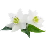
Eucharis Lily: Maiden charms- Lily (General): Majesty and honor, purity of heart
- Lily (Orange): Hatred, dislike
- Lily (Tiger): Wealth, pride, prosperity
- Lily (White): Virginity, purity, majesty, it's heavenly to be with you, youth
- Lily (Yellow): I'm walking on air, false, gay, gratitude
- Lily of the Valley: Sweetness, tears of the Virgin Mary, happiness, humility
- Lime: Conjugal love
- Liverwort: Confidence
- Lotus: Estranged love, forgetful of the past
- Love-in-a-Mist: You puzzle me
- Love-Lies-Bleeding / Amaranth: Hopeless, not heartless, desertion
- Lucerne / Alfalfa: Life
- Lungwort: Thou art my life
- Lupine: Imagination
- Lychnis / Campion / Maltese Cross: Religious enthusiasm
M
- Magnolia: Nobility, perseverance
- Magnolia (Chinese): Love of nature
- Mallow: Delicate beauty, sweetness
- Marigold (Common): Cruelty, grief, jealousy
- Marjoram: Joy, happiness
- Marvel of Peru / Four O'Clock: Timidity
- Meadow Saffron / Colchicum: My best days are gone
- Mezereon / Daphne: Desire to please
- Mignonette: Your qualities surpass your charms, health
- Milk Vetch: Your presence softens my pain
- Mimosa: Secret love
- Mint: Virtue
- Mistletoe: Kiss me, affection, difficulties, sacred plant of India
- Monkshood / Wolf's Bane: Beware, danger is near
 Moonwort / Honesty: Forgetfulness
Moonwort / Honesty: Forgetfulness- Morning Glory: Affection
- Moss: Maternal love, charity
 Motherwort: Secret love
Motherwort: Secret love- Mouse-Ear Chickweed: Simplicity
- Mugwort / Wormwood: Tranquillity, happiness
- Mullein: Good nature
- Myrtle: Love, joy, Hebrew emblem of marriage
 Bayberry: Discipline, instruction
Bayberry: Discipline, instruction
N
- Narcissus: Egotism, formality
- Nasturtium: Conquest, victory in battle
- Nuts: Stupidity
O
- Oak: Hospitality
- Oak Leaves: Bravery
- Oleander: Caution
- Olive Branch: Peace
- Orange Blossom: Innocence, eternal love, marriage, fruitfulness
- Mock Orange: Deceit
- Orchid: Love, beauty, refinement, Chinese symbol for many children, thoughtfulness
- Orchid (Cattleya): Mature charm
P
- Leaves: Victory and success
- Pansy: Merriment, thoughts (you occupy my thoughts)
- Parsley: Useful knowledge
- Pasque Flower / Anemone: Unpretentious, you have no claims
- Passion Flower: Faith, religious fervor
- Peach Blossom: I am your captive
- Pear: Affection
- Peony: Shame, happy marriage, compassion, bashfulness
- Peppermint: Cordiality
- Periwinkle / Vinca / Myrtle: Early recollections, pleasures of memories, sweet memories
- Petunia: Your presence soothes me
- Pheasant's Eye / Adonis Rose: Sorrowful memories
- Phlox: Our souls are united, unanimity
- Pimpernel / Poor Man's Weather Glass: Change
- Pine: Hope, pity
- Pink (Mountain) / Carnation: You are aspiring
- Pink / Carnation: Pure affection
- Pomegranate Flower: Elegance
- Poppy (General): Eternal sleep, oblivion, imagination
- Poppy (Red): Pleasure
- Poppy (White): Consolation
- Poppy (Yellow): Wealth, success
- Pride of China / China Berry: Dissension
- Primrose: I can't live without you
 Evening Primrose: Inconstancy
Evening Primrose: Inconstancy- Primrose (Red): Unpatronized merit
- Prince's Feather / Amaranth: Unfading love
- Pussy Willow: Motherhood
Q
- Quaking Grass: Agitation
R
- Ragged-Robin: Wit
- Ranunculus: I am dazzled by your charms
- Reed: Music
- Rhododendron: Danger, beware, I am dangerous
- Rhubarb: Advice
- Rose (Bridal): Happiness
- Rose (Burgundy): Unconscious beauty
- Rose (Christmas) / Hellebore: Relieve my anxiety
- Rose (Coral): Desire
- Rose (Damask): Freshness, Persian ambassador of love
- Rose (Dark Crimson): Mourning
- Rose (Dark Pink): Thankfulness
- Rose (Deep Red): Bashful, shame
- Dog Rose: Pleasure and pain
- Rose (Green): I am from Mars
- Hibiscus: Delicate, beauty
- Rose (Lavender): Enchantment
- Rose (Leaf): You may hope
- Rose (Musk Cluster): Charming
- Rose (Orange): Fascination
- Rose (Pale Pink): Grace, joy
- Rose (Peach): Immortality, modesty
- Rose (Pink): Perfect happiness, secret love, grace and sweetness, indecision
- Rose (Red): Love, I love you, respect, beauty
- Rose (Tea): I'll remember, always
- Rose (Thornless): Love at first sight, early attachment
- Rose (White and Red Together): Unity, flower emblem of England
- Rose (White): Innocence, purity, humility, I am worthy of you, secrecy, silence
- Rose (White-dried): Death is preferable to loss of virtue
- Rose (Yellow): Joy, jealousy, friendship (one yellow rose with 11 red ones means love and passion)
- Rose: Beauty and youth, a heart innocent of love
- Rose (Moss): Confessions of love
- Rose (Red): Pure and lovely
- Rose (White): Girlhood, heart ignorant of love
- Rosemary: Remembrance
- Rose of Sharon: Consumed by love
- Rose (Bouquet of Full Bloom): Gratitude
- Rose (Garland or Crown of): Beware of virtue, reward of merit, symbol of superior merit
- Rose (Single Full Bloom): I truly love you, simplicity
- Rue: Mercy, pity
- Horsetail / Horse-Tail: Docility
S
- Sage: Domestic virtues, wisdom, great respect, female fidelity
- Satin Flower / Honesty: Sincerity
- Sensitive Plant: Timidity
- Shamrock / Clover: Lightheartedness
- Sloe /
 Blackthorn: Difficulty, austerity
Blackthorn: Difficulty, austerity - Sarsaparilla: Loveliness
- Snapdragon: Gracious lady, strength
- Snowball / Guelder Rose: Thoughts of heaven
- Snowdrop: Hope, consolation
- Solidago / Goldenrod: Success
- Spearmint: Warm sentiment
- Spider Flower: Elope with me
- Star of Bethlehem: Atonement, reconciliation
- Starwort / Aster: Welcome to a stranger
- Stephanotis: Marital happiness, desire to travel
- Stock: Bonds of affection, promptness, you'll always be beautiful to me
- Stonecrop: Tranquillity
 Straw (Broken): Broken agreement
Straw (Broken): Broken agreement- Strawflower / Helichrysum: Agreement
- Sunflower: Constancy, devotion
- Sunflower (Dwarf): Adoration
- Sunflower (Tall): False riches, pride
- Sweet Pea: Goodbye, departure, blissful pleasure, thank you for a lovely time
- Sweet Sultan: Felicity, happiness
 Sweet William: Grant me one smile, gallantry
Sweet William: Grant me one smile, gallantry- Syringa / Mock Orange / Lilac: Memory
T
- Teasel: Misanthropy
- Thorn Apple / Datura: I dreamed of thee
- Thrift (Armeria): Sympathy
- Tiger Lily / Lily: Wealth and pride
- Traveller's Joy / Clematis: Rest, safety
- Trumpet Flower / Angel's Trumpet / Datura: Separation
- Tulip: Ardent love
- Tulip (General): Perfect lover, fame, flower emblem of Holland
- Tulip (Red): Believe me, declaration of love
- Tulip (Variegated): Beautiful eyes
- Tulip (Yellow): There's sunshine in your smile
- Turnip: Charity
V
- Valerian: Accommodating disposition
- Venus' Flytrap: Caught at last
- Venus' Looking Glass: Flattery
- Vervain: Pray for me, sensibility
- Veronica Speedwell: Fidelity
- Vervain: Enchantment
- : Intoxicating
- Violet: Modesty, virtue, affection, steadfastness
- Violet (Blue): Watchfulness, faithfulness, love
- Violet (White): Let's take a chance on happiness
- Virgin's Bower / Clematis: Filial love
- Viscaria: Will you dance with me?
W
- Wallflower: Faithful in adversity, fidelity, lasting beauty
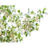
White Poplar: Time- Willow: Forsaken love
- Windflower / Anemone: Sincerity, symbol of love
- Wintergreen: Harmony
 Wisteria: Welcome
Wisteria: Welcome- Witch Hazel: A spell
- Wolf's Bane / Aconite / Turk's Cap / Friar's Cap / Bear's Foot: Misanthropy, chivalry
- Woodbine / Honeysuckle: Fraternal love
- Wormwood: Absence, torment of separation